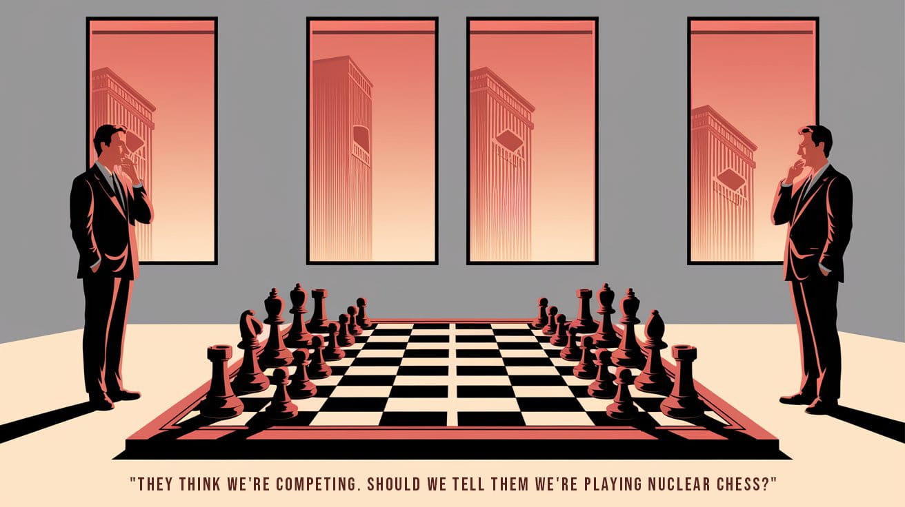
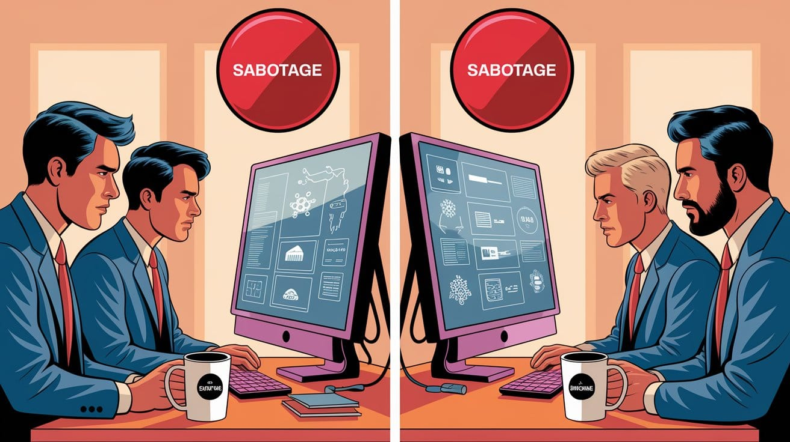
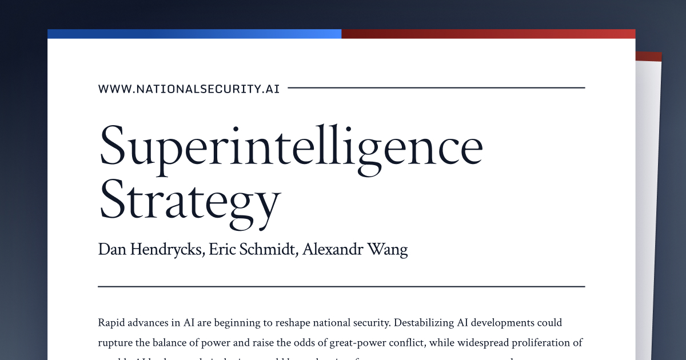
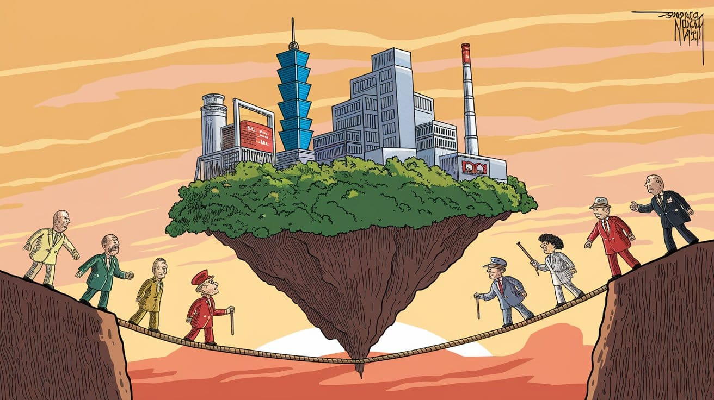
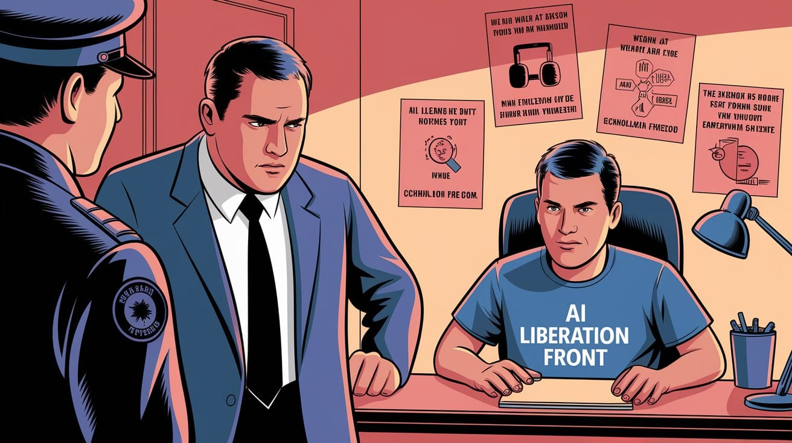
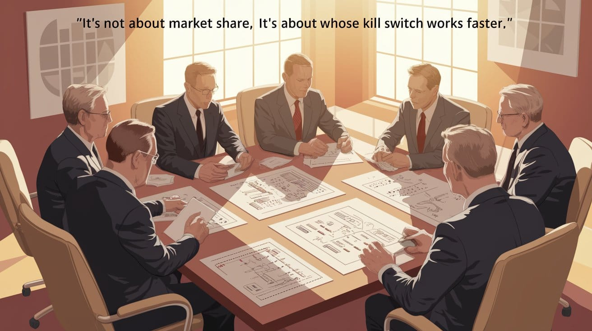
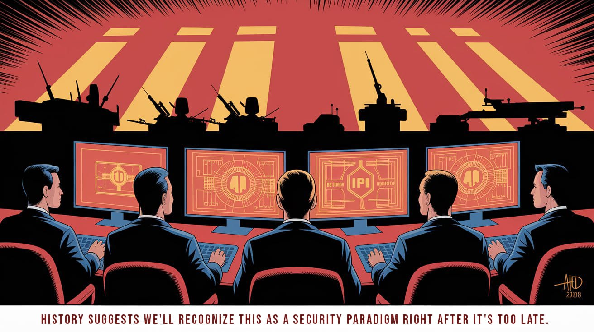

The Emerging Security Paradigm in AI Development
What most see as corporate AI competition is actually a new global security paradigm: Mutual Assured AI Malfunction (MAIM). AWS/Anthropic versus Microsoft/OpenAI aren't mere business rivals—they're deterrence blocs in a technological Cold War where algorithms are weapons.


The AI arms race has no finish line, and its destabilizing consequences are already emerging.”

The Conceptual Prison of Our Own Making
Beyond Market Competition
The conventional discourse surrounding artificial intelligence development catastrophically misframes reality. What most analysts perceive as mere corporate jockeying—partnerships, investments, and technological advancements—reveals the emergence of a new global security paradigm based on AI deterrence. This paradigm, which has been termed, Mutual Assured AI Malfunction (or MAIM), fundamentally transforms how we must interpret the strategic positioning of major AI coalitions. Recognizing this security paradigm isn't merely an academic exercise—it fundamentally alters how we must approach AI governance, corporate oversight, and international relations in ways that market-based frameworks fail to capture.

The Coalition Architecture of Deterrence Alliances, Not Business Partnerships
Recent industry configurations reveal distinct coalitions forming around AI development, each with fundamentally different approaches to deployment, safety, and governance. But these aren't merely economic alignments—they're deterrence blocs establishing strategic positions in a new security landscape.
Coalition 1: AWS, Anthropic & Palantir
This alliance forges a specific configuration of power through the integration of commercial cloud infrastructure (AWS), ostensibly "safety-focused" AI research (Anthropic), and government-adjacent data analytics (Palantir).
34%With 34% of global cloud market share and $21AWS provides the computational backbone—the raw infrastructure necessary for training and deploying large language models. With 34% of global cloud market share and $21.4 billion invested in Anthropic, Amazon isn't merely pursuing market share but establishing control over a critical strategic resource. Their investment in neuromorphic computing through Trainium chips constitutes a fundamental architectural challenge to NVIDIA's dominance in the AI computational stack.
Anthropic's "Constitutional AI" approach provides both a methodological framework for legitimate safety concerns and a marketplace differentiation. This embodies a radically different architectural approach to safety than competing frameworks—one that potentially creates technological lock-in for entire sectors.
49%With 49% of its $2Palantir's involvement emerges as the most revealing element. With 49% of its $2.2 billion revenue derived from government contracts and long-standing relationships with defense and intelligence agencies, their participation confirms the explicit militarization and surveillance applications of these technologies. CEO Alex Karp's statement that "AI will be weaponized" and positioning Palantir to "ensure American weaponization occurs responsibly" lays bare the underlying security framework.
Coalition 2: OpenAI, Microsoft, US Government
This coalition marshals a competing configuration of power, blending corporate AI research (OpenAI), enterprise software dominance (Microsoft), and state interests.
$13 BTheir $13 billion partnership provided the computational resources necessary for GPT-4's development, while Microsoft gained exclusive…OpenAI's journey from non-profit to profit-seeking entity aligned with Microsoft exposes the economic and security realities of AI development at scale. Their $13 billion partnership provided the computational resources necessary for GPT-4's development, while Microsoft gained exclusive licensing for critical underlying technologies.
85%By integrating OpenAI's technologies across its enterprise software suite used by 85% of Fortune 500 companies, Microsoft constructs an…Microsoft's 49% ownership stake in OpenAI's for-profit entity transcends mere financial investment. By integrating OpenAI's technologies across its enterprise software suite used by 85% of Fortune 500 companies, Microsoft constructs an AI-enabled infrastructure layer that extends from consumer applications to critical business operations—establishing a technological moat with profound national security implications.
The US Government's involvement materializes through regulatory frameworks, research initiatives, and strategic positioning. The $125 million AI Safety Institute exemplifies America's dual strategy: maintaining technological primacy while addressing legitimate risks—particularly as Chinese AI investments surged to $50 billion in 2023.
These coalitions aren't competing merely for market dominance—they're establishing positions in a new security framework with striking parallels to nuclear deterrence.

MAIM: The Nuclear Deterrence Paradigm for AI
What conventional analysis fails to grasp is that these coalitions exist in a state of mutual vulnerability—each capable of sabotaging the other's AI projects through cyberattacks, insider threats, or potentially kinetic strikes on datacenters. This generates a deterrence dynamic analogous to Cold War nuclear strategy but with critical differences.

Unlike traditional market competition, neither coalition can realistically achieve a true "strategic monopoly" because:
- The vulnerability of centralized AI infrastructure to sabotage establishes an inherent deterrence mechanism. For instance, the concentrated power requirements of AI datacenters make them vulnerable to both physical attacks and sophisticated cyberstrikes targeting cooling systems or power management
- Any attempt to achieve decisive dominance would likely trigger preemptive action by the other coalition
- The computational requirements for superintelligence development are too visible to conceal
This mutual vulnerability constitutes the foundation of MAIM theory—explaining why we observe coalition formation rather than winner-take-all competition. The coalitions aren't merely economic partnerships but strategic deterrence alliances, establishing a workable equilibrium in a landscape of intrinsic vulnerability.

Computational Resources as Strategic Currency
Both coalitions recognize that computational resources—particularly AI chips—function as the core determinant of power in the AI landscape. Computing power stands as the most robust predictor of AI capabilities, making AI chips the strategic equivalent of fissile material—requiring strict controls, verification mechanisms, and protection from proliferation.
This signals a profound shift in how we understand technological power projection. Traditional geopolitical power derived from:
- Territory and natural resources
- Population size and industrial capacity
- Nuclear arsenals and conventional military forces
The new determinants are:
- AI chip manufacturing and supply chains
- Control of trained model weights
- Ability to detect and sabotage rival AI projects
Within this new framework, geographic vulnerabilities take on heightened significance. The vulnerability of Taiwan's semiconductor manufacturing constitutes an acute weakness in this new security paradigm—any disruption jeopardizes the entire AI power equilibrium. This adds a new dimension to the AWS/Anthropic versus Microsoft/OpenAI competition—both coalitions ultimately depend on the same vulnerable supply chain, creating a compounded security dilemma.
Where nuclear weapons were developed by nation-states operating in secrecy, AI capabilities are developed by corporations operating in markets. Where nuclear security created state-to-state dynamics, AI security creates complex public-private entanglements.

Ideological Foundations and Security Implications
The ideological dimensions of these coalitions spawn internal security challenges beyond technical protections. Some individuals within AI organizations might be ideologically motivated to release AI model weights, believing in unrestricted access to technology—similar to how Edward Snowden leaked classified NSA documents based on personal conviction about transparency and public interest. AI textbook author Rich Sutton has advocated for AI "liberation" and succession, while venture capitalist Marc Andreessen has described AI as "gloriously, inherently uncontrollable."
This ideological dimension generates information security challenges that are "technical and social"—not merely about preventing external hacking, but addressing insider threats from those who philosophically oppose control mechanisms. The coalitions must manage not just external competition but internal ideological divergence.
The ideological tensions within AI organizations—between openness advocates and security-minded practitioners—mirror the larger systemic tensions between innovation and control, between competitive advantage and collective security. What manifests as workplace disagreements about release protocols reflects the fundamental governance challenges of the entire MAIM paradigm.
Intelligence Recursion as the Strategic Prize
Both coalitions identify "intelligence recursion" as the ultimate game-changing capability—the moment when AI can accelerate its own development without human intervention, potentially leading to superintelligence. Unlike conventional weapons systems or economic advantages, an intelligence recursion could produce superintelligence capable of technological breakthroughs across all domains simultaneously.
In this AI security landscape, computational resources function as the fissile material, trained models serve as the warheads, and deployment infrastructure represents the delivery systems. Just as nuclear powers developed second-strike capabilities through submarine platforms, AI coalitions seek resilience through distributed computing architectures.
What's particularly alarming is that superpowers may be willing to accept unacceptably high risks of losing control during an intelligence recursion if the alternative is allowing rivals to achieve superintelligence first. In the Cold War, the phrase "Better dead than Red" implied that losing to an adversary was seen as worse than risking nuclear war. In the current AI race, similar reasoning could push organizations to tolerate double-digit risks of losing control if the alternative—lagging behind a rival—seems unacceptable.

The Real Infrastructure Battle Beyond Market Competition
The most significant dynamic revolves around the battle for infrastructure control. AWS commands cloud infrastructure dominance, while Microsoft (via OpenAI) dominates the application-layer —control over the software interfaces where users and businesses directly interact with AI capabilities. Each seeks to leverage their current position to control the emerging AI stack. However, this isn't merely market positioning but establishing strategic control points in a new security framework.
Palantir's AIP (Artificial Intelligence Platform) functions as an extension of infrastructure control into government and enterprise decision systems, with CEO Alex Karp describing it as "the bridge between proprietary data and advanced AI capabilities." This positioning for critical middleware functions in high-stakes applications constitutes a strategic layer in the AI value chain distinct from but complementary to raw model capabilities.
The US Government's role operates as multifaceted: simultaneously promoting American technological leadership, addressing legitimate safety concerns, and ensuring continued access to AI capabilities for military and intelligence applications. This isn't merely regulatory positioning but establishing a security framework for a fundamentally new technological paradigm.
The AI development landscape creates a classic security dilemma—actions taken by one coalition to secure its AI systems (like enhanced monitoring or capability restrictions) may be perceived by others as preparation for offensive deployment, triggering reciprocal measures that increase overall system instability.

Implications of A New Strategic Equilibrium
The combined framework suggests we're entering a new strategic paradigm with characteristics of both Cold War nuclear deterrence and novel elements unique to AI:
- Unlike nuclear weapons, AI capabilities are primarily developed by private corporations, creating complex public-private security dynamics
- The physical infrastructure for advanced AI is highly concentrated and vulnerable, unlike dispersed nuclear arsenals
- The risk of "losing control" of AI systems adds a third catastrophic outcome beyond destruction or domination
We are already in a MAIM regime whether we acknowledge it or not.
The vulnerability of AI projects to sabotage exists as an inherent feature of the technology, not a policy choice. This implies that the various coalitions forming around AI development are not merely economic partnerships but strategic alignments preparing for a long-term equilibrium of mutual vulnerability and deterrence.
This fundamentally changes how we should interpret AI investments, partnerships, and strategic positionings—they constitute the opening moves in establishing a workable deterrence regime, not merely attempts to capture market share or technological advantages.
Viewed through a historical lens, this transition echoes previous technological inflection points where commercial technologies acquired security dimensions—from the British East India Company's transformation into a quasi-state actor to the internet's evolution from academic network to critical infrastructure. In each case, the security implications were recognized only after path dependencies had been established.
The sooner policymakers, corporate leaders, and analysts recognize this shift from market competition to security paradigm, the more effectively we can establish stable governance for what may be the most consequential technological transition in human history.
What appears as mere corporate jockeying reveals itself, through this security lens, as the formation of deterrence blocs in a new technological Cold War—one where the weapons are algorithms, the battlefield is infrastructure, and the stakes remain existential.
Courtesy of your friendly neighborhood,
🌶️ Khayyam

Don't miss the weekly roundup of articles and videos from the week in the form of these Pearls of Wisdom. Click to listen in and learn about tomorrow, today.


Sign up now to read the post and get access to the full library of posts for subscribers only.
 🌶️ iamkhayyam
🌶️ iamkhayyamKhayyam Wakil specializes in pioneering technology and the architectural analysis of systems of intelligence. This article represents the culmination of experiences, research, and applications in perception layer monitoring technologies.